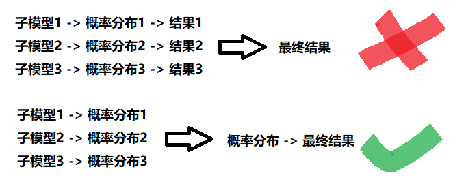
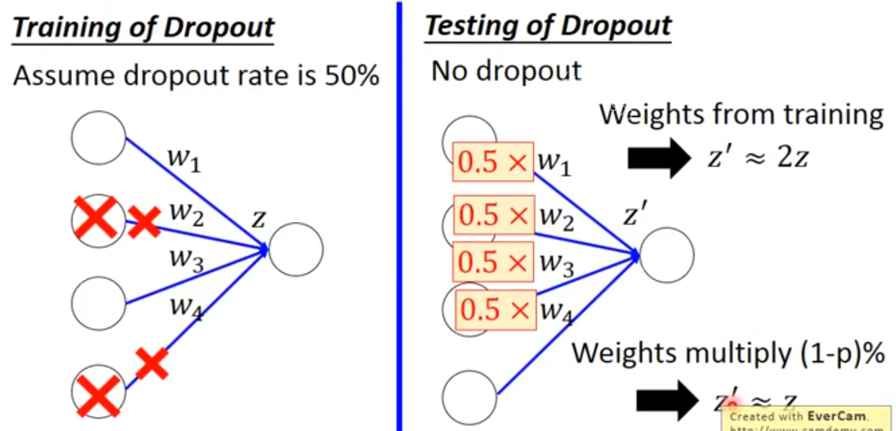

1. 什么是dropout
[success] dropout训练的整体过程
（1）Unit采样，去掉部分unit及相应的weight，生成新的子模型
（2）用一个batch训练这个模型
（3）unit恢复 （4）go to step (1)
1.1. 怎样生成子模型
具体而言，Dropout训练的集成包括所有从基础网络除去非输出单元后形成的子网络，如图7.6所示。

最先进的神经网络基于一系列仿射变换和非线性变换，我们只需将一些单元的输出乘零就能有效地删除一个单元。
[success] Dropout的实现 --- Inverted Dropout
根据p生成这一层单元的掩码向量d，其中di为这一层第i个unit是否存在。
这一层单元的输出向量为h
h = h * z h = h / p（这一步被称为Inverted Dropout。如果不这么做，h的期望就后改变，导致测试的时候计算期望比较复杂。如果有了这一步，测试时就不需要做任何改变）。
这个过程需要对模型（如径向基函数网络，单元的状态和参考值之间存在一定区别）进行一些修改。
[warning] [?] 单元的状态和参考值是指什么？为什么说径向基网络的单元状态和参考值存在区别？需要怎么dropout?
径向基函数网络
为了简单起见，我们在这里提出乘零的简单Dropout算法，但是它被简单修改后，可以与从网络中移除单元的其他操作结合使用。
[warning] [?] 移除单元的其他操作
回想一下Bagging学习，我们定义个不同的模型，从训练集有放回采样构造个不同的数据集，然后在训练集上训练模型。 Dropout的目标是在指数级数量的神经网络上近似这个过程。 具体来说，在训练中使用Dropout时，我们会使用基于小批量产生较小步长的学习算法，如随机梯度下降等。 我们每次在小批量中加载一个样本，然后随机抽样应用于网络中所有输入和隐藏单元的不同二值掩码。
[success] 每次处理一个小批量样本时，针对每一层随机地生成一个二值掩码，将这个小批量样本应用到由这个二值码定义的子网络上。
对于每个单元，掩码是独立采样的。 掩码值为1的采样概率（导致包含一个单元）是训练开始前一个固定的超参数。
[warning] 采样概率，是当前Unit的掩码为1（不被删除）的概率？还是Unit掩码为1的情况下不被删除的概率？
它不是模型当前参数值或输入样本的函数。
[success]
模型当前参数值：与模型状态有关的参数，每一轮迭代都会变化。
输入样本的函数：与输入样本有关的参数，不同样本这个值就不同。
这句话想表达的是：采样概率与迭代状态无关，与输入参数无关，是一开始就确定好的。
通常在每一个小批量训练的神经网络中，一个输入单元被包括的概率为，一个隐藏单元被包括的概率为。
[success]
关于概率p，Ag的建议是：
某一层的W的size大，则p可以小一点。W的size小，p可以大一点。
W大意味着容易发生过拟合。
输入层通常不做dropout
然后，我们运行和之前一样的前向传播、反向传播以及学习更新。 图7.7说明了在Dropout下的前向传播。
1.2. 怎样训练子模型
[success] dropout和Bagging的区别 （1）在Bagging的情况下，所有模型都是独立的。 在Dropout的情况下，所有模型共享参数，其中每个模型继承父神经网络参数的不同子集。
（2）在Bagging的情况下，每一个模型在其相应训练集上训练到收敛。 在Dropout的情况下，通常大部分模型都没有显式地被训练。取而代之的是，在单个步骤中我们训练一小部分的子网络，参数共享会使得剩余的子网络也能有好的参数设定。
Dropout训练与Bagging训练不太一样。 在Bagging的情况下，所有模型都是独立的。 在Dropout的情况下，所有模型共享参数，其中每个模型继承父神经网络参数的不同子集。 参数共享使得在有限可用的内存下表示指数级数量的模型变得可能。
[success] 这是以廉价的方式训练和评估指数级数量的神经网络的关键。
在Bagging的情况下，每一个模型在其相应训练集上训练到收敛。 在Dropout的情况下，通常大部分模型都没有显式地被训练，因为通常父神经网络会很大，以致于到宇宙毁灭都不可能采样完所有的子网络。 取而代之的是，在单个步骤中我们训练一小部分的子网络，参数共享会使得剩余的子网络也能有好的参数设定。 这些是仅有的区别。 除了这些，Dropout与Bagging算法一样。 例如，每个子网络中遇到的训练集确实是有放回采样的原始训练集的一个子集。
1.3. 怎样集成子模型
Bagging集成必须根据所有成员的累积投票做一个预测。 在这种背景下，我们将这个过程称为推断。 目前为止，我们在介绍Bagging和Dropout时没有要求模型具有明确的概率。 现在，我们假定该模型的作用是输出一个概率分布。 在Bagging的情况下，每个模型产生一个概率分布。
[success]
不是一个单独的符号。
每个模型产生的概率分布都用符号表示，上标（i）表示这个概率分布是第i个模型产生的。
1.3.1. 算术平均
集成的预测由这些分布的算术平均值给出，
[success]
并不是简单粗暴的最终结果投票。每个模型都直接产生它认为的最终结果，然后选择最终结果中出现次数最多的。不是这样的。
实际上每个模型不直接给出各自最终结果，而是给出它对所有结果的概率预测。由集成模型根据每个模型的概率分布计算出最终的概率分布，然后得到最终结果。
图：

例如有三个模型，分别对某一个样本的预测分布与结果如下：如果直接对结果做统计，最终结果是False。
如果对分布求算法平均， 再求最终结果，则应该是True。
在Dropout的情况下，通过掩码 定义每个子模型的概率分布。
[success] 问：dropout情况下不会显式地训练每个子模型，怎么计算子模型的概率分布？
答：这里不是真的要把每个对应有概率分布计算出来，只是定义一个符号。
Dropout每个相当于Bagging中的每个
Dropout中的每个子模型由来区分。而Bagging中的每个子模型由子模型编号i区分。
所有掩码的算术平均值由下式给出
其中是训练时采样的概率分布。
[success] 可以对比Bagging来理解。
在公式7.52计算Bagging的算术平均分布时，认为每个子模型出现的概率是相等，都是。
而在公式7.53计算dropout的算法平均分布时，认为每个子模型出现的概率与它的掩码有关，定义为。
因为这个求和包含多达指数级的项，除非该模型的结构允许某种形式的简化，否则是不可能计算的。
[success] 有多少种就有多少种子模型，就有多少项。
目前为止，无法得知深度神经网络是否允许某种可行的简化。 相反，我们可以通过采样近似推断，即平均许多掩码的输出。
[warning] [?]采样近似推断, 平均许多掩码的输出?
即使是个掩码就足以获得不错的表现。
[warning] 怎么把指数级的项简化到10-20个的？
1.3.2. 几何平均
然而，一个更好的方法能不错地近似整个集成的预测，且只需一个前向传播的代价。 要做到这一点，我们改用集成成员预测分布的几何平均而不是算术平均。
[success]
算术平均、几何平均
WardeFarley提出的论点和经验证据表明，在这个情况下几何平均与算术平均表现得差不多。
[warning] [?] 这个情况下是指什么？
多个概率分布的几何平均不能保证是一个概率分布。 为了保证结果是一个概率分布，我们要求没有子模型给某一事件分配概率0，并重新标准化所得分布。
[warning] 如果某一子模式给某一事件分布概率0，会导致这个事件的平均概率变成0.
[?] 问题是怎么保证这一点？
通过几何平均直接定义的非标准化概率分布由下式给出
[warning] 问：根号里面的内容为什么不是?
答：这里假设所有模型出现的概率为均匀分布。
下面有说明。
其中是可被丢弃的单元数。
[success] 就是有可能被dropout的Unit的个数。
例如有两层网络，第一个使用了dropout这种正则化方式，而第二层没有使用。那么d就是第一层的unit的个数。
这里为简化介绍，我们使用均匀分布的，但非均匀分布也是可以的。
[warning] [?] 如果使用非均匀分布，公式怎么写？
为了作出预测，我们必须重新标准化集成：
[success] 归一化，使它符合概率分布。
2. 权重比例推断规则
[success]
这几段没怎么看懂，但总体意思是说：
训练时使用dropout，使用超参数p，训练得到的参数为w。
预测时不使用dropout，使用的参数为w(1-p)
问：为什么预测时使用的参数为w(1-p)
答：
涉及Dropout的一个重要观点是，我们可以通过评估模型中来近似：
[success]
假设每个子模型都能计算出的情况下，根据上面的公式
就是最后集成模型的概率分布。
该模型具有所有单元，但我们将单元的输出的权重乘以单元的被包含概率。
[warning] 单元i的输出计算为h，被包含的概率即这一层的dropout值，是一个超参数。
这样计算出来的是h的期望。
但是h的期望有什么用呢？具体怎么使用呢？
就是说不需要真的根据dropoup某些unit的网络来训练，只是正确方式训练网络，然后将乘以dropout就可以了？
这个修改的动机是得到从该单元输出的正确期望值。 我们把这种方法称为权重比例推断规则（weight scaling inference rule）。 目前还没有在深度非线性网络上对这种近似推断规则的准确性作任何理论分析，但经验上它表现得很好。
[warning] [?][?] 这一段看不懂
因为我们通常使用的包含概率，权重比例规则一般相当于在训练结束后将权重除，然后像平常一样使用模型。
[warning] 这两种训练方式是什么关系？
假设dropout=0.5，上面一段说正确训练网络，只是让h 0.5
这一段又是正常训练网络，只是结束后让weights 0.5
实现相同结果的另一种方法是在训练期间将单元的状态乘。
[warning] [?] 单元是状态是什么？
无论哪种方式，我们的目标是确保在测试时一个单元的期望总输入与在训练时该单元的期望总输入是大致相同的（即使近半单位在训练时丢失）。
对许多不具有非线性隐藏单元的模型族而言，权重比例推断规则是精确的。
[warning] 不具有非线性的隐藏单元？
举个简单的例子，考虑softmax函数回归分类，其中由向量表示个输入变量：
[warning] [?] softmax用于多分类？怎么成了回归分类？
这里要说明的比例推断规则在非线性隐藏单元上的效果，但softmax不是隐藏单元，是输出单元。这有什么关系呢？
我们可以根据二值向量逐元素的乘法将一类子模型进行索引：
集成预测器被定义为重新标准化所有集成成员预测的几何平均：
其中
为了证明权重比例推断规则是精确的，我们简化：
[success]
7.60：同7.59
7.61：代入公式7.57
7.62：将softmax公式展开
由于将被标准化，我们可以放心地忽略那些相对不变的乘法：
[success]
假设 y = (y1, y2)，那么
也就是说与y无关的乘法项可以省略。
公式7.63中的分母项与具体的y无关，可以省略。
[success]
7.65基于[warning] 6.54到7.66是怎么推出来的？
将其代入公式7.58，我们得到了一个权重为的softmax函数分类器。
[success]
从公式上证明了dropout为0.5的正则化，与正常训练网络后将所有weight乘以0.5的效果是一样的。
权重比例推断规则在其他设定下也是精确的，包括条件正态输出的回归网络以及那些隐藏层不包含非线性的深度网络。
[success]
正态输出的回归网络
然而，权重比例推断规则对具有非线性的深度模型仅仅是一个近似。
虽然这个近似尚未有理论上的分析，但在实践中往往效果很好。
实验发现，在对集成预测的近似方面，权重比例推断规则比蒙特卡罗近似更好（就分类精度而言）。
即使允许蒙特卡罗近似采样多达1000子网络时也比不过权重比例推断规则。
gal2015bayesian发现一些模型可以通过二十个样本和蒙特卡罗近似获得更好的分类精度。
似乎推断近似的最佳选择是与问题相关的。
[warning] [?] 蒙特卡罗近似?
3. Dropout的优点
3.1. 优点1：计算开销小
Srivastava14显示，Dropout比其他标准的计算开销小的正则化方法（如权重衰减、过滤器范数约束和稀疏激活的正则化）更有效。 Dropout也可以与其他形式的正则化合并，得到进一步的提升。
3.2. 优点2：计算方便
计算方便是Dropout的一个优点。 训练过程中使用Dropout产生个随机二进制数与状态相乘，每个样本每次更新只需的计算复杂度。 根据实现，也可能需要的存储空间来持续保存这些二进制数（直到反向传播阶段）。 使用训练好的模型推断时，计算每个样本的代价与不使用Dropout是一样的，尽管我们必须在开始运行推断前将权重除以2。
3.3. 优点3：不怎么限制适用的模型或训练过程
Dropout的另一个显著优点是不怎么限制适用的模型或训练过程。 几乎在所有使用分布式表示且可以用随机梯度下降训练的模型上都表现很好。
[success] [?]使用分布式表示
包括前馈神经网络、概率模型，如受限玻尔兹曼机，以及循环神经网络。
许多效果差不多的其他正则化策略对模型结构的限制更严格。
[warning] 其他正则化策略对模型结构有什么限制？
[success]
dropout还有一个特点，即使用接近线性的unit配合dropout效果比较好。
例如ReLU、Maxout
4. Dropout的代价
4.1. 必须增大模型规模
虽然Dropout在特定模型上每一步的代价是微不足道的，但在一个完整的系统上使用Dropout的代价可能会是显著的。 因为Dropout是一个正则化技术，它减少了模型的有效容量。 为了抵消这种影响，我们必须增大模型规模。 不出意外的话，使用Dropout时最佳验证集的误差会低很多，但这是以更大的模型和更多训练算法的迭代次数为代价换来的。 对于非常大的数据集，正则化带来的泛化误差减少得很小。 在这些情况下，使用Dropout和更大模型的计算代价可能超过正则化带来的好处。
[success]
dropout会使训练效果变差，而泛化能力增强。
为了对抗“训练效果变差”而增大模型规模。
4.2. 训练样本极少时效果不好
只有极少的训练样本可用时，Dropout不会很有效。
[warning] 什么时候用呢？
训练数据非常大时，dropout的代价超过好处。
训练数据极少时，dropout又不会很有效。
在只有不到5000的样本的数据集上，贝叶斯神经网络比Dropout表现得更好。 当有其他未分类的数据可用时，无监督特征学习也比Dropout更有优势。
[warning] [?]贝叶斯神经网络、有其他未分类的数据可用、无监督特征学习
4.3. ？？？
{Wager+al-2013}表明，当Dropout作用于线性回归时，相当于每个输入特征具有不同权重衰减系数的权重衰减。 每个特征的权重衰减系数的大小是由其方差来确定的。 其他线性模型也有类似的结果。 而对于深度模型而言，Dropout与权重衰减是不等同的。
[warning] ? [?] 这一段看不懂
5. Dropout的随机性
[success]
Ag补充：由于dropout的随机性，其J下降的过程难以重复，因此debug时不使用dropout。
对于使用dropout的模型，在debug时先把p设置为1.
debug结束再把p设置为真实值。
使用Dropout训练时的随机性不是这个方法成功的必要条件。 它仅仅是近似所有子模型总和的一个方法。 \cite{WangManning-ICML2013-small}导出了近似这种边缘分布的解析解。 他们的近似被称为快速Dropout，减小梯度计算中的随机性而获得更快的收敛速度。 这种方法也可以在测试时应用，能够比权重比例推断规则更合理地（但计算也更昂贵）近似所有子网络的平均。 快速Dropout在小神经网络上的性能几乎与标准的Dropout相当，但在大问题上尚未产生显著改善或尚未应用。
[warning] ? [?] 这一段看不懂
随机性对实现Dropout的正则化效果不是必要的，同时也不是充分的。 为了证明这一点，{WardeFarley+al-ICLR2014}使用一种被称为Dropout Boosting的方法设计了一个对照实验，具有与传统Dropout方法完全相同的噪声掩码， 但缺乏正则化效果。 Dropout Boosting训练整个集成以最大化训练集上的似然。 从传统Dropout类似于Bagging的角度来看，这种方式类似于Boosting。 如预期一样，和单一模型训练整个网络相比，Dropout Boosting几乎没有正则化效果。 这表明，使用Bagging解释Dropout具有使用稳健性噪声解释Dropout之外的额外价值。 只有当随机抽样的集成成员相互独立地训练，才能达到Bagging集成的正则化效果。
[warning] ? [?] 这一段看不懂
Dropout启发其他以随机方法训练指数量级的共享权重的集成。 DropConnect是 Dropout的一个特殊情况，其中一个标量权重和单个隐藏单元状态之间的每个乘积被认为是可以丢弃的一个单元。 随机池化是构造卷积神经网络集成的一种随机化池化的形式(见第9.3节)，其中每个卷积网络参与每个特征图的不同空间位置。 目前为止，Dropout仍然是最广泛使用的隐式集成方法。
[warning] ? [?] 这一段看不懂
6. Dropout的理论依据
[success] 为什么Dropout有用？（Ag的回答）
模型不能依赖于任意一个特征，so have to sptread out weights。即不把赌注放在一个输入上。
一个关于Dropout的重要见解是，通过随机行为训练网络并平均多个随机决定进行预测，实现了一种参数共享的Bagging形式。 早些时候，我们将Dropout描述为通过包括或排除单元形成模型集成的Bagging。 然而，这种参数共享策略不一定要基于包括和排除。 原则上，任何一种随机的修改都是可接受的。 在实践中，我们必须选择让神经网络能够学习对抗的修改类型。 在理想情况下，我们也应该使用可以快速近似推断的模型族。 我们可以认为由向量参数化的任何形式的修改，是对所有可能的值训练的集成。 注意，这里不要求具有有限数量的值。 例如，可以是实值。 {Srivastava14}表明，权重乘以比基于二值掩码Dropout表现得更好。 由于，标准网络自动实现集成的近似推断，而不需要权重比例推断规则。
目前为止，我们将Dropout介绍为一种纯粹高效近似Bagging的方法。 然而，还有比这更进一步的Dropout观点。 Dropout不仅仅是训练一个Bagging的集成模型， 并且是共享隐藏单元的集成模型。 这意味着无论其他隐藏单元是否在模型中，每个隐藏单元必须都能够表现良好。 隐藏单元必须准备好进行模型之间的交换和互换。 {Hinton-et-al-arxiv2012-small}由生物学的想法受到启发：有性繁殖涉及到两个不同生物体之间交换基因，进化产生的压力使得基因不仅是良好的而且要准备好不同有机体之间的交换。 这样的基因和这些特点对环境的变化是非常稳健的，因为它们一定会正确适应任何一个有机体或模型不寻常的特性。 因此Dropout正则化使得每个隐藏单元不仅要是一个很好的特征，更要在许多情况下是良好的特征。 {WardeFarley+al-ICLR2014}将Dropout与大集成的训练相比并得出结论：相比独立模型集成获得泛化误差改进，Dropout会带来额外的改进。
Dropout强大的大部分原因来自施加到隐藏单元的掩码噪声，了解这一事实是重要的。 这可以看作是对输入内容的信息高度智能化、自适应破坏的一种形式，而不是对输入原始值的破坏。 例如，如果模型学得通过鼻检测脸的隐藏单元 ，那么丢失对应于擦除图像中有鼻子的信息。 模型必须学习另一种，要么是鼻子存在的冗余编码，要么是像嘴这样的脸部的另一特征。 传统的噪声注入技术，在输入端加非结构化的噪声不能够随机地从脸部图像中抹去关于鼻子的信息，除非噪声的幅度大到几乎能抹去图像中所有的信息。
[success]
Ag说dropout在计算机视觉的应用中非常常用。在其它应用中看情况而定。
破坏提取的特征而不是原始值，让破坏过程充分利用该模型迄今获得的关于输入分布的所有知识。
Dropout的另一个重要方面是噪声是乘性的。 如果是固定规模的加性噪声，那么加了噪声的整流线性隐藏单元可以简单地学会使变得很大（使增加的噪声变得不显著）。 乘性噪声不允许这样病态地解决噪声鲁棒性问题。
[warning] 乘性噪声？加性噪声？
另一种深度学习算法——批标准化，在训练时向隐藏单元引入加性和乘性噪声重新参数化模型。 批标准化的主要目的是改善优化，但噪声具有正则化的效果，有时没必要再使用Dropout。 批标准化将会在第8.7.1节中被更详细地讨论。